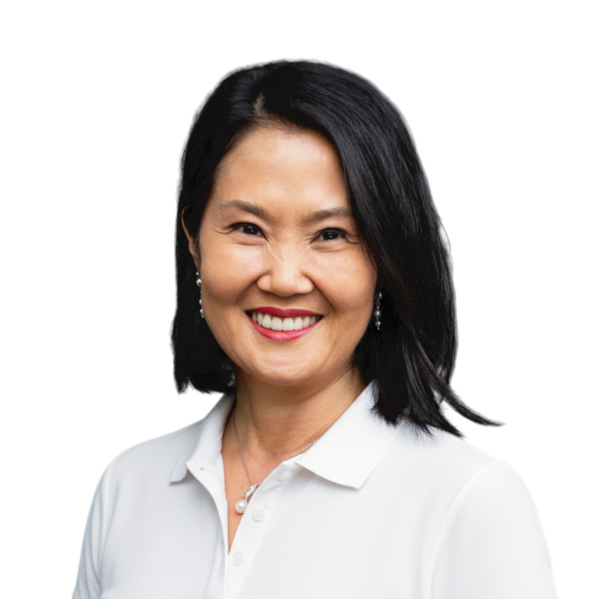
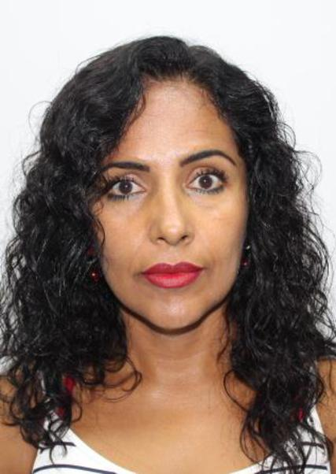
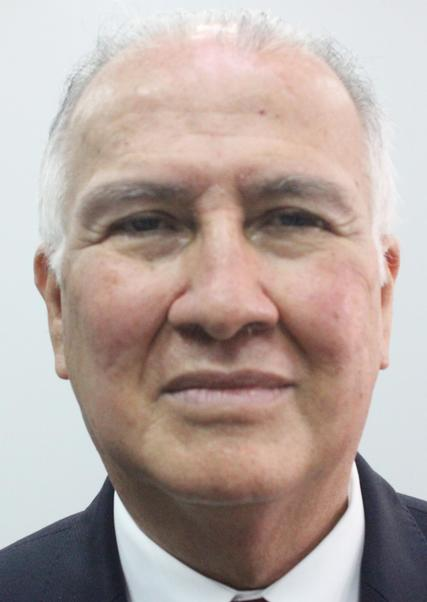
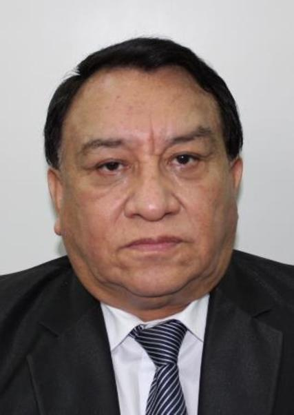
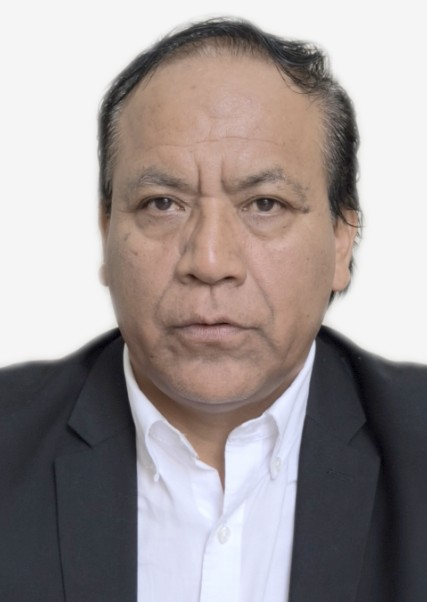
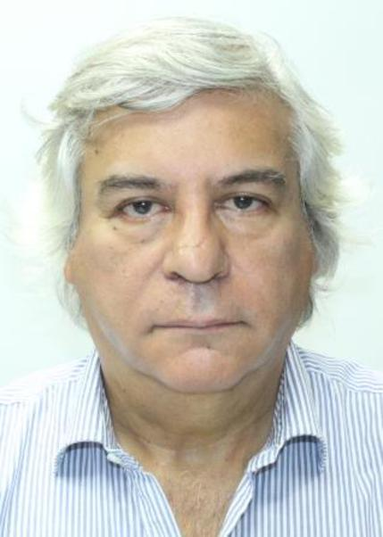
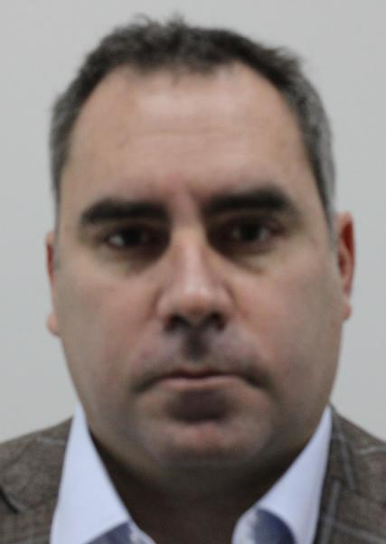
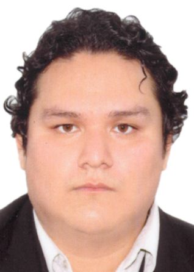
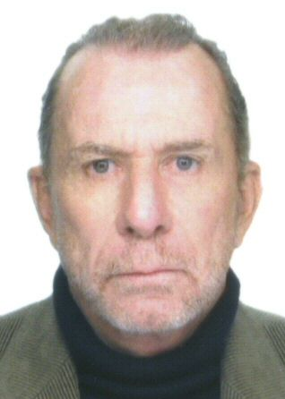

| Nombres | Partido Politico | Foto | CV |
|---|---|---|---|
| Keiko Fujimori | Fuerza Popular |  |
|
| Cesar Acuña | Alianza para el progreso | |
Empresario |
| Jorge Nieto | Buen Gobierno | |
Militar |
| Rosario Fernandez | Un camino diferente |  |
Politica |
| Herbert Caller | Partido Patriótico del Perú | |
Politica |
| Lopez Chau | Ahora Nación |  |
Economista |
| Jose Luna | Podemos Perú |  |
Economista |
| Roberto Sanchez | Juntos por el Perú |  |
Politico |
| Carlos Jaico | Perú Moderno | |
Abogado |
| Fernando Olivera | Frente de la esperanza |  |
Politico |
| Rafael Lopez | Renovacion Popular | |
|
| Charlie Carrasco | Partido Democratico Unido | |
Politico |
| William Zapata | Avanza Pais | |
Empresario |
| Ronald Darwin | Alianza Electoral Venceremos | |
Politico |
| Gozalo De La Barra | Fe en el Perú | |
Abogado |
| Fiorella Molinelli | Fuerza y Libertad | |
Empresario |
| Rafael Belaunde | Libertad Popular |  |
Politico |
| Enrique Valderrama | Partido Aprista Peruano |  |
Abogado |
| Ricardo Belmont | Partido Civico Obras |  |
|
| Gonzales Castillo | Partido Democrata Verde | |
Politico |
| Armando Masse | Partido Democratico Federal | |
Politico |
| George Forzyth | Partido Democratico Somos Perú | |
Contadora |
| Mesias Guevara | Partido Morado | |
Abogado |
| Carlos Alvarez | Partido Pais para Todos | |
Comediante |
| Yonhy Lezcano | Partido politico Cooperacion Popular | |
Comediante |
| Wolgang Grozo | Partido politico Integridad Democratica | |
Militar |
| Vladimir Cerron | Partido Nacional Peru Libre | |
fugitivo |
| Francisco Tavara | Partido politico Perú Accion | |
Politico |
| Walter Chirinos | Partido Politico PRIN | |
Politico |
| Carlos Espa | Partido Si Creo | |
Politico |
| Paul Jaimes | Progresemos | |
Politico |
| Antonio Villano | Salvemos al Perú | |
Politico |
| Enrique Chiabra | Unidad Nacional | |
Politico |